Ch1. ConsoleQuickStarts
Check the Scoring Guidelines sheet for notes on how to connect to your OpenShift Web Console.
1.1 ConsoleQuickStart Basic Usage
The ConsoleQuickStart custom resource provides a convienient way to offer guided experiences and usage documentation within the OpenShift Console.
-
From the Overview page, Choose the "View all quick starts" link within the "Getting started resources" section
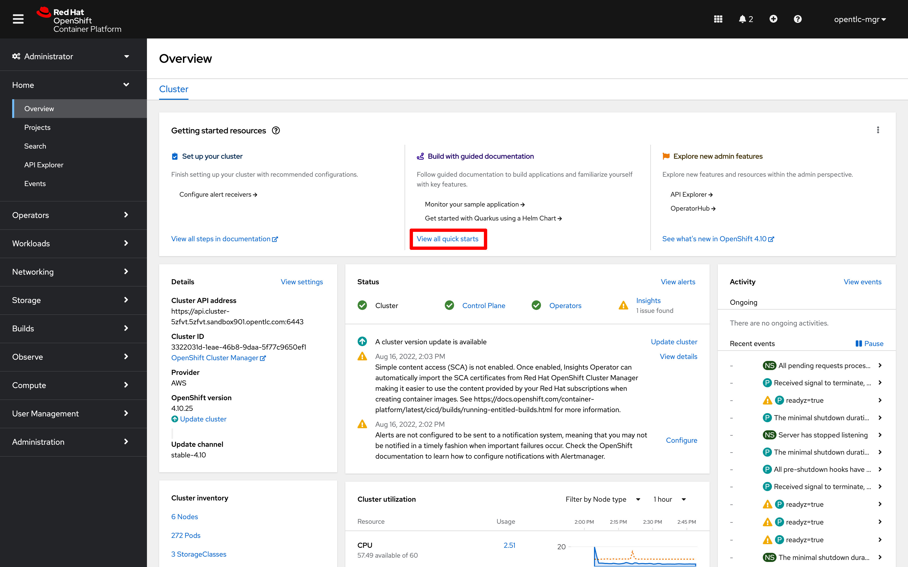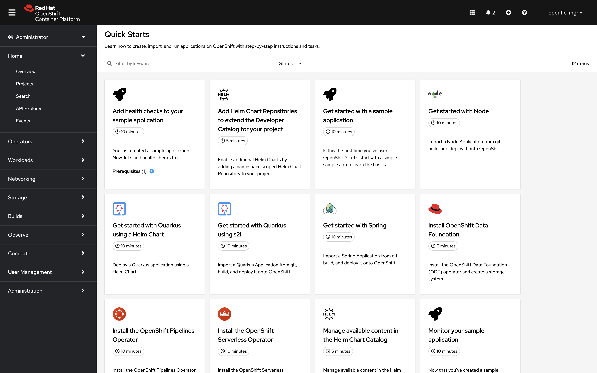 -
Search quickstarts for "Helm", then select the tile labeled "Manage available content in the Helm Chart Catalog"
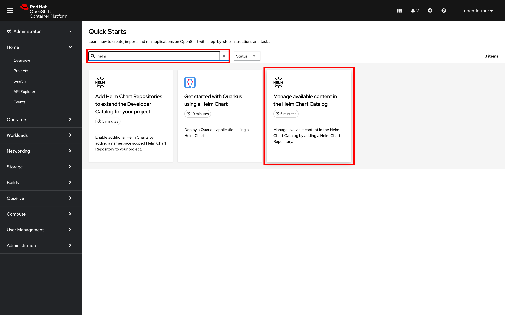 -
Follow along with the quickstart instructions to install the azure charts cluster-wide
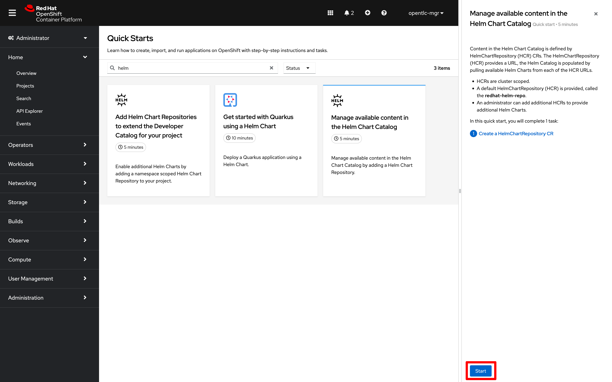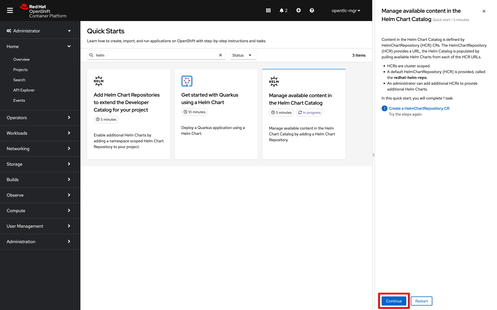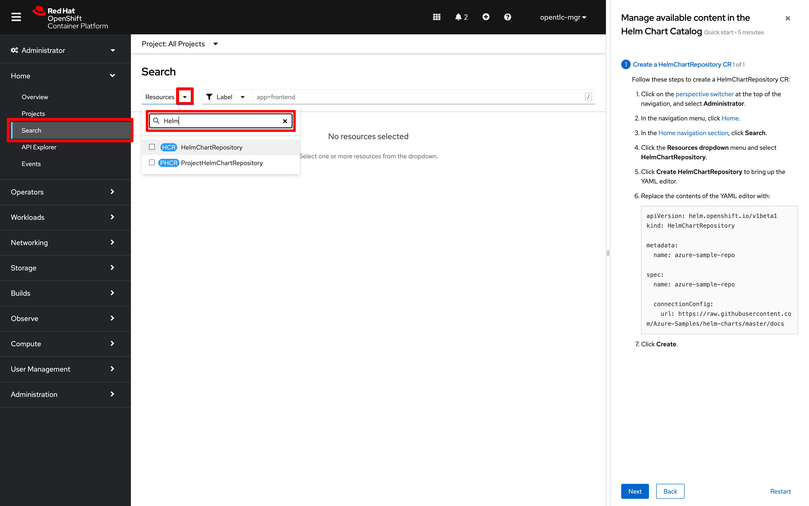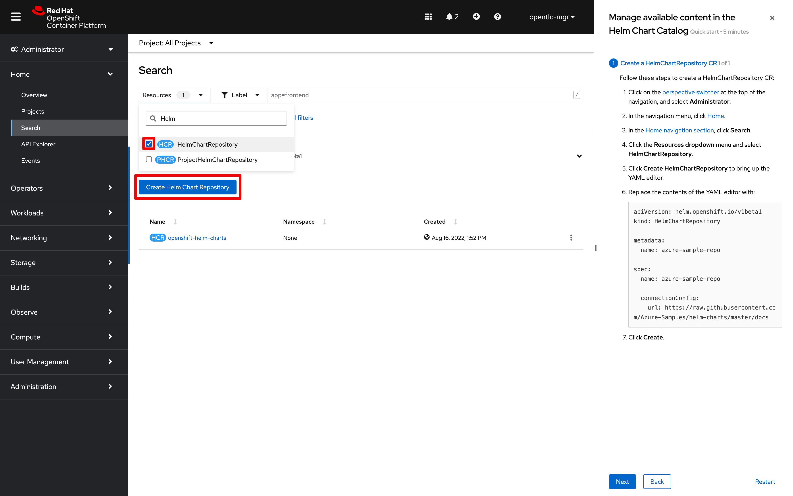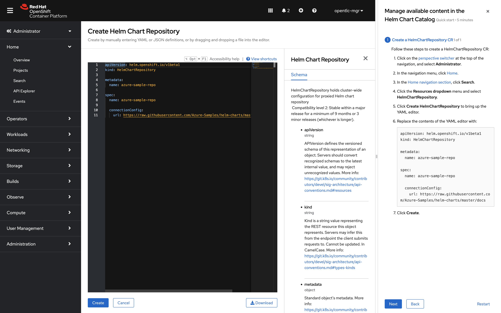 -
After completing each instruction in the quickstart guide, click "Next". Then, follow the "Check your work" section to validate your work
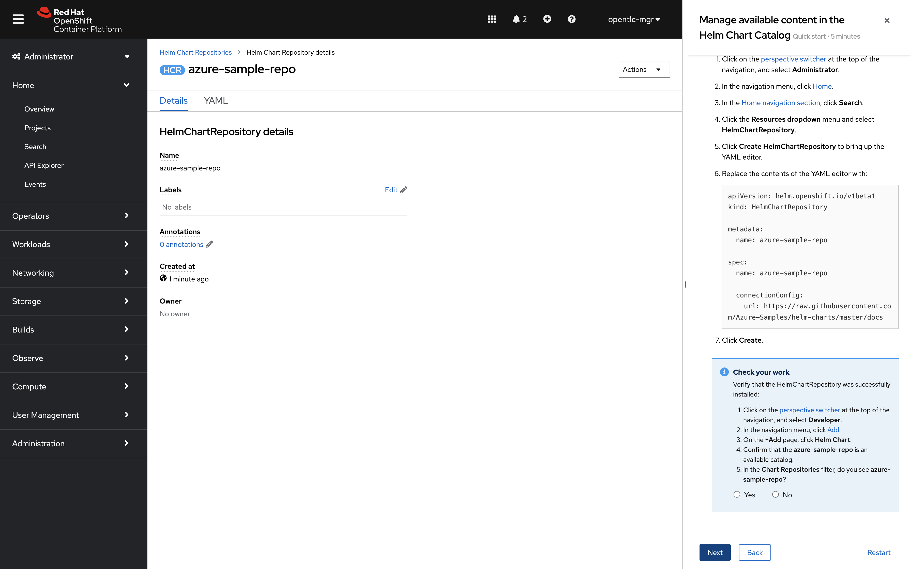 -
Confirm that Azure helm charts are available in the "+Add" Menu. Follow the prompts to check your work.
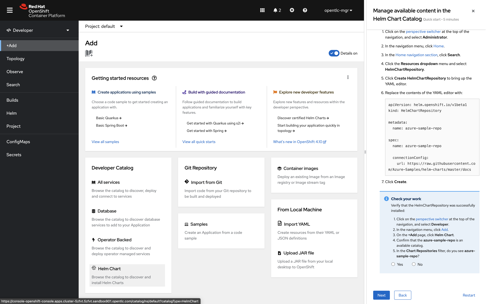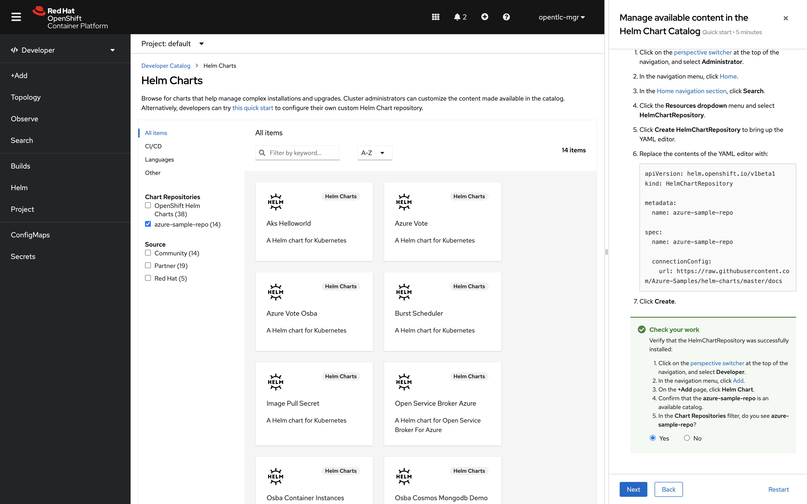 -
Click "Next" when you are satisified with the results. Then, click "Close" to complete the QuickStart
Helm Charts from the new repository are now available throughout the cluster.
1.2 QuickStart Modifications
Image a situation where we wanted our team to have access to the Bitnami Helm repos, but we don’t want to clutter up the menu for other developers by making this content available cluster-wide. ProjectHelmChart resources are the perfect solution when you need per-project or per-team usage of Helm repositories on a cluster.
In this section, we will learn how to modify an existing ConsoleQuickStart resource with new instructions. The resulting ConsoleQuickStart resource should install the Bitnami Helm repo (instead of the Azure helm repository).
-
Search for Resource type
ConsoleQuickStarts -
Select the item named
install-helmchartrepo-ns -
Click on
YAMLto edit the resource -
On line 96, update the
urlattribute with the Bitnami helm repo address:https://charts.bitnami.com/bitnami -
Click "Save"
In the next section, the reader will verify that the quickstart has been updated by running a manual test of the modified resource.
1.2.1 Check your work - Helm Charts per project
Follow along with the "Add Helm Chart Repositories to extend the Developer Catalog for your project" QuickStart to test your modifications from the previous seciton:
-
Click on "view all quickstarts", then search for "Helm"
-
Select the tile labeled "Add Helm Chart Repositories to extend the Developer Catalog for your project"
-
Complete each step of the quickstart. Confirm that you were able to successfully modify the quickstart’s help chart repo url